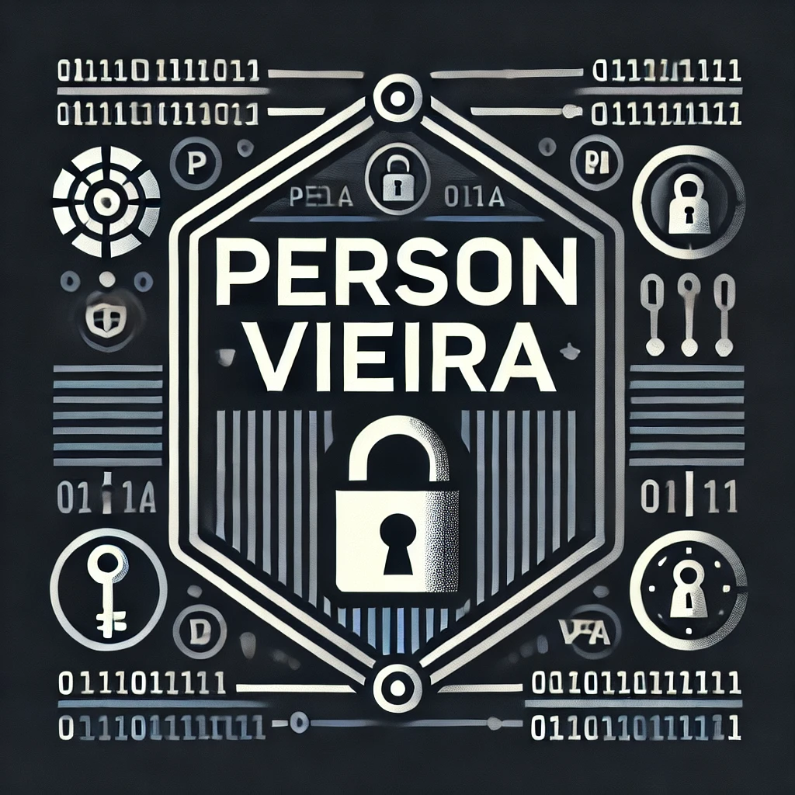

**Site em construção.**
A segurança da informação é um campo essencial que visa proteger dados, sistemas e redes contra ameaças e acessos não autorizados. Em um mundo cada vez mais digital, a informação se tornou um ativo ativo para indivíduos, empresas e governos, sendo alvo frequente de ataques mal-intencionados. As práticas de segurança da informação buscam preservar a confidencialidade , integridade e disponibilidade das informações, conhecidas como os três pilares da segurança da informação, ou Triângulo da CIA.
Confidencialidade : Garantir que as informações sejam seguras apenas para pessoas ou sistemas autorizados, protegendo-as contra interceptação e divulgação não autorizada. Técnicas de criptografia, autenticação de usuários e controle de acesso são exemplos de medidas para proteger a confidencialidade.
Integridade : Garanta que os dados sejam precisos e não tenham sido alterados ou danificados. A integridade protege as informações contra modificações maliciosas ou acidentais. O uso de assinaturas digitais e somas de verificação ajuda a verificar se os dados permanecem intactos desde a sua criação até o seu destino final.
Disponibilidade : Garantir que as informações e os sistemas estejam sempre acessíveis aos usuários autorizados. Para isso, são inovadoras estratégias de redundância, como backup de dados e balanceamento de carga, além de medidas de proteção contra ataques de negação de serviço (DDoS).
Além desses princípios, a segurança da informação envolve várias áreas, como gestão de riscos , que identifica e mitiga possíveis vulnerabilidades; educação e conscientização , promovendo a segurança entre usuários finais; e resposta a incidentes , que trata de planos de ação para responder rapidamente a ataques e minimizar o impacto de uma eventual violação.
As ameaças à segurança da informação são muitas e incluem desde ataques de malware e phishing, que tentam enganar usuários e infectar dispositivos, até ataques mais complexos, como o ransomware, que sequestram dados e bloqueiam resgate para sua liberação. Por isso, o desenvolvimento de uma cultura de segurança da informação é fundamental, tanto no ambiente corporativo quanto no individual.
Com políticas adequadas, treinamentos frequentes e tecnologias de segurança, é possível mitigar os riscos e proteger os dados em um cenário digital cada vez mais complexo e ameaçador.